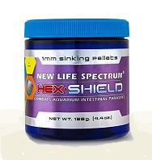
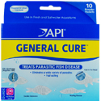

HEX SHIELD Sinking Pellets
M01
125g |
- Highly palatable medicated food
- Treats and prevent a variety of wasting diseases caused by aquarium intestinal parasites
- Flagellates and organisms can cause intestinal disorders such as Hexamita and Spironucleus
- Contains whole Antarctic krill to ensure eager consumption
|
$43.00 |
 |
Wonder Shell
M02 |
- Aids in Chlorine removal and helps keep aquarium clear. These mineral blocks can help cure scoliosis in fish such as Guppies or even Bettas when lack of minerals is the cause
- Each shell oxygenates, aerates and aids in neutralizing harmful acids resulting from normal bio processes
- This makes the small Wonder Shell an excellent choice for Betta Bowls (especially when combined with pillow moss, Peat, Indian almond leaf extracts, or driftwood pieces)
- Excellent for use with Goldfish, Livebearers, Cichlids, and more
- Comes in small, medium and large
|
$1.99
-$3.99 |
 |
GENERAL CURE
API Pro Series
M03 |
- Treats a wide variety of parasitic diseases for both freshwater and saltwater fish
- Alternative treatment for Clout, with less fish stress (especially for delicate fish), although not quite as strong
- 10 powder packets for 10 gallons each
|
$8.99 |
 |